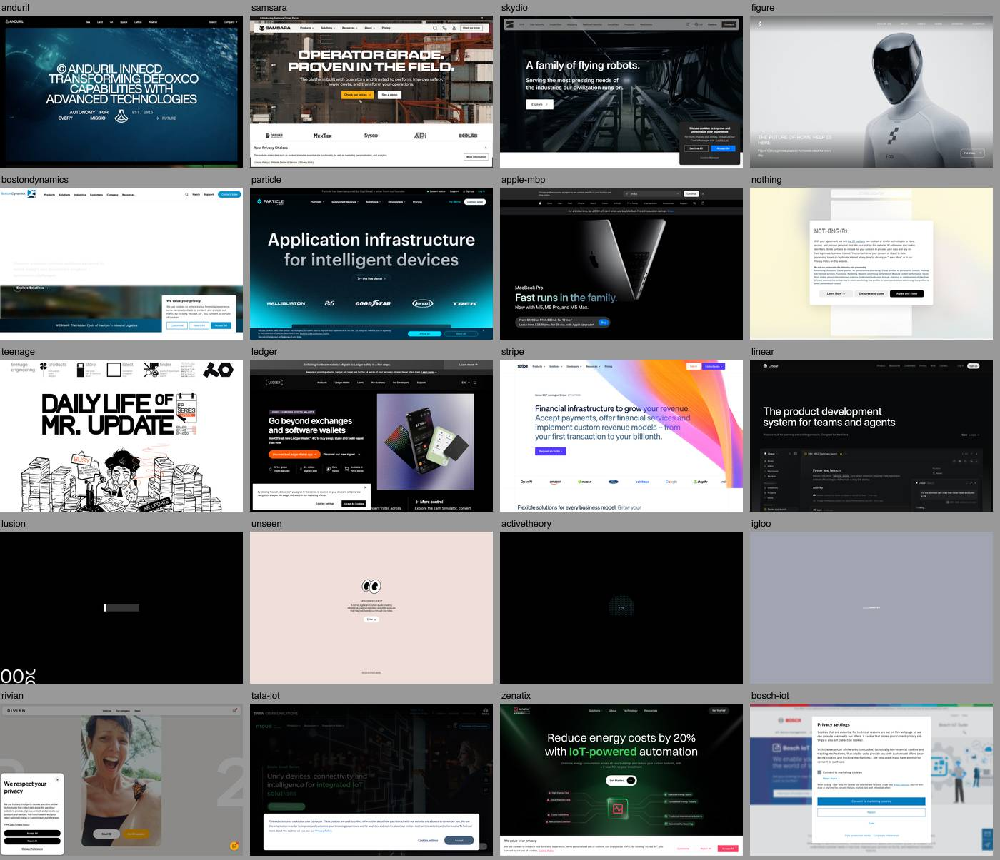
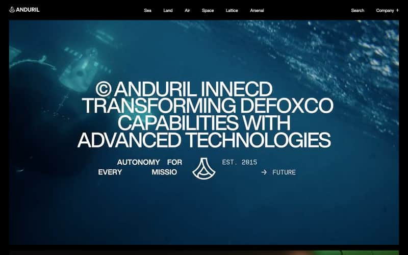
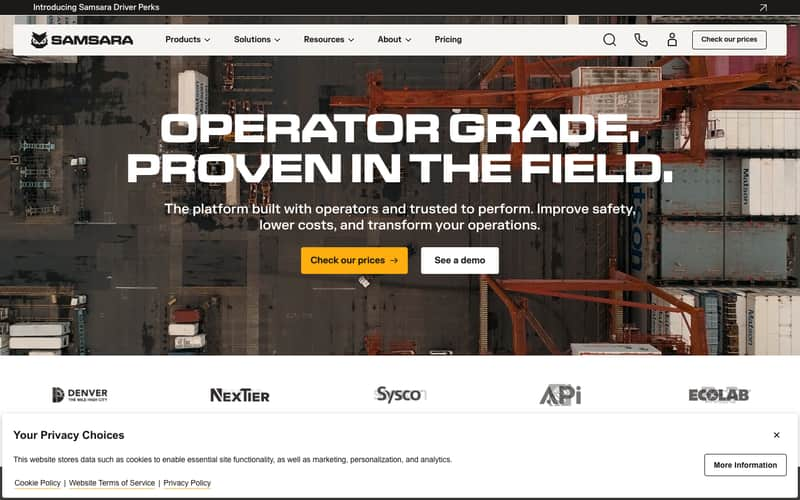
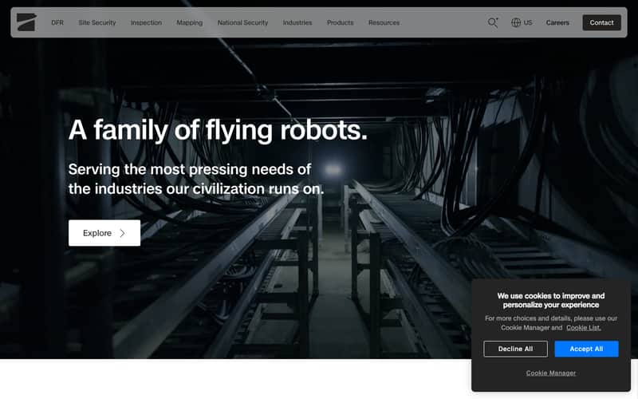
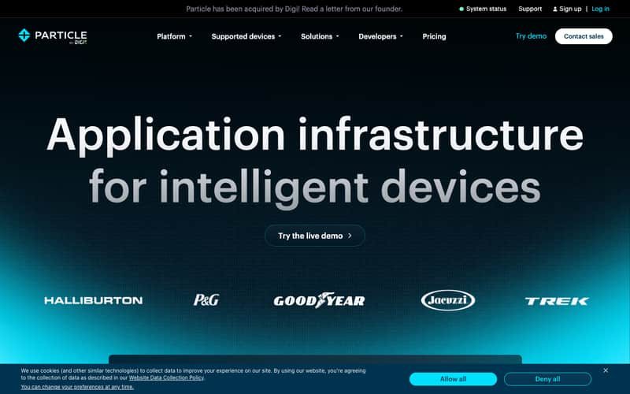
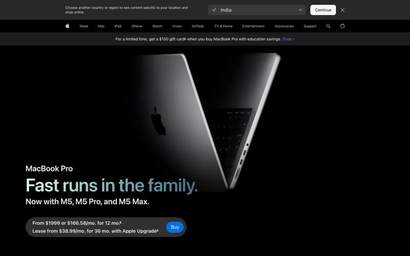
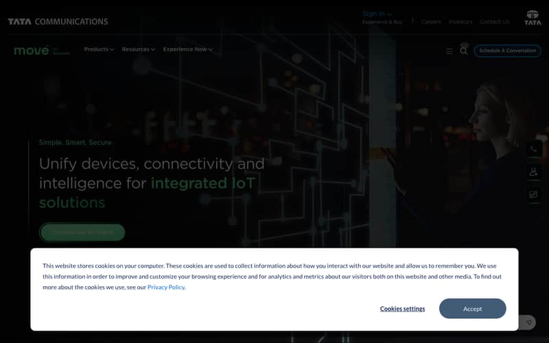

01What the research says
Awards data, judge behaviour and the best-in-class sites agree on six things. They are the rules this plan is built on.
used immersive 3D (23% in Q1 2024). Three.js powered 29 of 47 winners.
points on the 10-point scale — the difference between Honourable Mention and Site of the Day.
What wins on Awwwards is what clients expect two years later. Building it now is early, not late.
Six rules
- Motion must carry meaning, not decorate. Winners use scroll to reveal a mechanism — the camera moves because the story moved. Judges score “scroll-driven narratives” above “3D showcases” for exactly this reason. Corollary for AID-IoT: the site animates how the signal travels from a machine to a screen, never “a floating device”.
- Real beats rendered when the thing is real. Anduril’s design lab uses “only practical photography and video rather than renderings or 3D models, to show that products are real, in action” (Fast Company). Skydio’s homepage runs eight videos of drones doing the job. Apple mixes real product video with WebGL. AID-IoT has real, fielded hardware — that is the asset; 3D is for what a camera cannot show (inside the enclosure, the layers, the flow).
- Hardware + software is told as one system with one name. Anduril: Lattice. Samsara: “the Connected Operations Platform”. Particle: “Ship software to hardware”. Skydio: “loaded with the best sensors… guided by the most advanced AI”. Nobody says “we also do software”. They name the platform and make the hardware its hands. AID-IoT needs a named platform.
- Judges test on real devices and penalise frame drops. Winning sites front-load heavy work, hold under ~4 ms per frame during scroll, and degrade gracefully by device tier. B2B adds: HTML must stay crawlable, LCP under 2.5 s, reduced-motion respected.
- Agency theatrics do not transfer to B2B. Lusion, Unseen and Active Theory open with loaders and “enter with audio” screens; they are portfolios (Experience mode). A CXO on a phone in a depot does not wait for a preloader. Take their craft (shaders, pacing, typography), not their gates.
- The IoT category is visually asleep. Tata Communications, Bosch IoT Suite, Zenatix, Sirros: stock photography, cookie walls, generic “Simple. Smart. Secure.” copy. The bar to stand out in IoT is low; the bar to stand out on the open web is high. Aim at the second.
Technique findings that shape the build
- 3D product pipeline: glTF with Draco (geometry −50–90%) and KTX2/Basis textures (−75%) loads a complex product in under 500 ms; keep mobile textures at 1024 px. Spline is fine for marketing accents; React Three Fiber for anything scroll-driven or interactive.
- Scroll-driven camera: GSAP ScrollTrigger scrubbing a Three.js camera along a spline is the dominant winning pattern (87% of top-scoring patterns). Lenis provides the weighted smooth scroll that makes it feel “premium” — Anduril, Nothing and Igloo all ship Lenis.
- Image sequences (the Apple technique) are a good fallback, not the primary: they churn texture uploads on mid-range phones (20–35 ms frames). Use them where WebGL is unavailable or for short heroes.
- Stack observed on the benchmarks: Next.js (Figure, Formlabs, Rivian, Linear, Stripe), GSAP (Skydio, Figure, Rivian, Unseen, Zenatix), Lenis (Anduril, Nothing), Three.js (Apple, Igloo, Lusion, Unseen), Babylon (Rivian configurator). Webflow/Nuxt at Samsara. Nobody good is on a page builder alone.
Sources: Digital Strategy Force — immersive experiences on the 2026 Awwwards · Hon Tran — award-winning websites 2026, judged by a juror · Fast Company — inside Anduril’s design lab · Metabole — scrollytelling guide · Draco/KTX2 compression targets · R3F mobile performance · Awwwards Sites of the Year (Igloo Inc, 2025).
02Benchmarks: what to steal, what to skip
Twenty-seven sites rendered in Chrome; nine industries. Screenshots are first viewports as a visitor sees them, cookie walls included.

| Site | Industry | What they do that works | Steal | Skip |
|---|---|---|---|---|
| Anduril | Defence hardware + software | Nav is Sea · Land · Air · Space · Lattice · Arsenal — domains, not product codes. Each product gets a two-word thesis (“First to See, First to Act”, “Own the Edge”). Lattice sits in the nav as a peer of hardware. Lenis smooth scroll, full-bleed practical video, one canvas. | Domain-led nav; product thesis lines; platform as a peer nav item; “world-building” per product line with one shared system. | The martial register; AID-IoT’s defence line is one sector, not the brand. |
| Samsara | Connected operations (fleet IoT) | “Operator grade. Proven in the field.” Proof before features (380k accidents prevented, 350 integrations, logos). Products dropdown grouped by job (Cameras, Telematics, Equipment, Workforce) with the Platform as its own group. Solutions by outcome (Safety, Compliance, Efficiency) and by industry. | Proof-first hero; two-axis Solutions (outcome × industry); hardware grouped by job; a “Platform” group. | Density of the mega-menu (40+ links); ratings widgets. |
| Particle | IoT platform | “Application infrastructure for intelligent devices. Ship software to hardware.” Five-layer platform story (application, edge, cloud, connectivity, management) with an architecture diagram per layer. Numbers: 60 B messages/month. | The layered-platform narrative and the diagram-per-layer discipline — this is the “software as important as IoT” story done right. | Developer-first tone; AID-IoT’s first reader is an operator, not a developer. |
| Skydio | Autonomous drones | “A family of flying robots.” Homepage is five use-case modules with video (DFR, Security, Inspection, Mapping, National Security), each with a customer result (“30-second response times”, “60% faster inspections, $800K avoided”). 5.5 M flights counter. | Use-case modules with a result number each; a single live counter; video of the product doing the job. | Eight autoplaying videos on one page (weight). |
| Figure / Boston Dynamics | Robotics | One product, one screen, one sentence (“The future of home help is here”). Hardware and the AI (Helix) as two named things on the same page. BD: “Your teammate, your tool. Meet Spot.” | Naming the intelligence separately from the body; restraint — one thing per screen. | Consumer-robot spectacle; not our register. |
| Apple (MacBook Pro) | Consumer hardware | Scroll-driven product reveal, sticky chapters (Performance, Battery, Ports), 13 videos and Three.js, spec strips as design. 30,000 px page and it never feels long. | Chapter structure for product pages; spec strip as a designed object; “Take a closer look” interactive section. | Page weight and video count; Apple has a CDN budget you don’t. |
| Nothing / Teenage Engineering | Consumer electronics | Nothing: custom dot-matrix type (Ndot) that only Nothing could own; Glyph as brand. TE: product grid with zero hero, matter-of-fact copy, an illustrated comic as the campaign. | A typographic asset that is unmistakably yours; product families named and grouped; copy without hyperbole. | Consumer whimsy; the hero-less grid does not serve first-time B2B visitors. |
| Linear / Stripe | Software | Linear: real UI as the imagery, dark with precise typography, “a new species of product tool”. Stripe: product-as-infrastructure diagrams, the animated gradient, developer proof. | Real interface screenshots in motion as proof of software; infrastructure diagrams; a mono face for data. | Stripe’s gradient (now the most copied thing on the web). |
| Igloo Inc (Awwwards SOTY 2025) | Web3 brand | A single 3D world you scroll through; the object is the narrative. Adaptive quality by device. | The idea that one 3D object can carry the whole story; adaptive quality tiers. | Preloader and “experience” framing. |
| Lusion / Unseen / Active Theory | Agencies | Shader craft, weighted scroll, typographic pacing, audio. | Craft standards for the motion team; “scroll to explore” cues done tastefully. | Enter screens, audio gates, loaders — Experience mode, not Persuade. |
| Tata IoT / Bosch IoT / Zenatix / Sirros | IoT peers | Zenatix leads with a number (“Reduce energy costs by 20%… 2-year ROI”) — the only peer with an outcome headline. | Outcome-number headline. | Stock photos, “Simple. Smart. Secure.”, cookie walls, no product imagery. |






03Who visits, and what each needs
Nine visitor types, ranked by revenue influence. The first three decide whether the site exists for a reason; the architecture is built for them and accommodates the rest.
| # | Visitor | Their question | Enters at | Must find within two clicks | Success |
|---|---|---|---|---|---|
| 1 | Executive buyer — CEO / COO / plant or depot head, often non-IT | “Can these people fix my operational blind spot, and are they credible?” | Home (referral, search “IoT company India”) | A one-sentence claim; proof logos; a sector page that names their problem; a number; a human to talk to | Books a call |
| 2 | Operations owner — fleet manager, warehouse head, production manager | “Does this work with what I have, offline, and what changes for my team?” | Solutions › sector; a product page from search | How it works in plain language; “works with your existing…”; offline behaviour; the app their team would use | Requests a pilot |
| 3 | Defence / government programme & procurement | “Indigenous? Fielded? Secure? Who do I write to?” | Solutions › Defence; Company | Credentials (MoD, Indian Army, IIT), sovereignty and security posture, a programme office contact, brochures | Requests a brief / RFI response |
| 4 | Technical evaluator — CTO, OT engineer, system integrator | “Protocols, power, APIs, hosting, what’s the catch?” | Product page; Software › platform | Spec tables, architecture diagram, datasheet PDF, API/integration list, self-hosted option | Downloads a datasheet, shortlists |
| 5 | Builder client — OEM or founder who needs a device built | “Can you design, write and manufacture my product — and what happens after?” | Services | How we work (steps and durations), what you get, shipped examples, PCB and manufacturing capability | Sends a brief |
| 6 | Educator / institution — IIT lab, college, IdeaLab | “What programmes, for whom, how long, what do we keep?” | Services › Training | Programme cards with duration and outcomes; equipment; FDP | Enquires for a cohort |
| 7 | Engineer-shopper — maker, student, lab | “Do you have the part, at what price, shipped when?” | Store (search) | Category, price, stock, shipping policy | Buys |
| 8 | Existing customer | “Where is my dashboard / support?” | Log in | Portal link, support contact, docs | Logs in without touching marketing |
| 9 | Talent, partners, press | “Who are they, what are they building, is it real?” | Company | About, news, careers, partner programme | Applies / contacts |
What this means for the structure
- Visitors 1–3 think in problems and sectors first, products second → Solutions is the first nav item and the homepage’s main body.
- Visitor 4 thinks in products and platform → Products and Software are separate, equal branches with deep third-level content (specs, APIs) that never leaks upward.
- Visitor 5 is a different business (services) → its own branch with its own template; do not mix with Solutions.
- Visitors 7–8 must be able to bypass the story → Store and Log in are persistent utilities, never inside a dropdown.
- Visitors 3 and 9 need Company to be real: About, credentials, case studies, news, careers — pages the current site does not have.
04The story: connect · communicate · automate · scale
Your vision in your words: to be one of the best end-to-end IoT companies; help people connect through IoT, communicate through tools, automate, and do it at scale. That is already a four-beat narrative. The site should be built on it — nav, homepage, and every template.
Why “software as important as IoT” is a strength, not a footnote
The benchmark companies that win do not say “hardware and software”. They say the system has a name and the hardware is how the system touches the world. Anduril: Lattice runs on Ghost, Sentry, Menace. Samsara: the Connected Operations Platform runs on cameras and gateways. Particle: “ship software to hardware”. For AID-IoT the honest and differentiating claim is stronger than any of them for an Indian buyer: the same people who solder the board write the dashboard. There is no vendor gap to fall through.
Naming the platform
Today the software is “the AID-IoT dashboard”, “AID-ERP”, “TraceCraft”, “FSMS/DEPOT/RAVEN/QUEST”. Give the platform one name and make every app a module of it. Three candidates, from your own vocabulary (final choice is yours; trademark check needed):
- AID Signal — the platform is literally the signal path; product pages can say “runs on Signal”.
- AID Loop — sense → decide → act → learn; automation is the promise.
- AID Grid — the site already references “sincgrid”; a grid is what scale looks like.
Recommendation: Signal. It names the thing customers care about (the data getting through), it is a physical word non-IT readers understand, and it gives the site its visual spine (§06).
The four beats, and what each becomes on the site
| Beat | Plain claim | What proves it | Where it lives |
|---|---|---|---|
| Connect | We get the data off machines that were never designed to share it. | IIoT Bridge, Edge Lite, Ethernet Bridge; “speaks Modbus, RS-485, CAN…” → “works with what you already own” | Solutions “by outcome” › Connect; Products › Gateways & edge |
| Communicate | The data reaches the people who decide — on any link, even with no network. | 4G/Wi-Fi/satellite/LoRa mesh; VMS-O “0 SIMs”; NavIC CMS “when the network goes dark” | Solutions › Communicate; Software › Signal platform; Fleet & convoy products |
| Automate | The system acts before a human has to. | AID-Auto interlock, AID-Fuel alerts, AidFresh FEFO, vending controller, on-device rules | Solutions › Automate; Software modules |
| Scale | From one unit to a nationwide rollout, built in India. | Manufacturing (25+ processes), 5,000+ SKUs on AID-ERP, MoD fielding, Delhi + Canada | Services › Manufacturing; Company › Why AID-IoT; case studies |
Positioning line and voice
- Positioning (internal): For operators who run physical things — plants, fleets, depots, bases — AID-IoT is the Indian company that designs the device, writes the software and runs the platform, so the signal never falls between vendors.
- Headline candidates (homepage): “We own the signal, end to end.” · “From the machine to the decision. One team.” · “Hardware that talks. Software that listens. Built in India.” · “Every machine, every litre, every vehicle — connected, and acted on.”
- Voice: the engineer who built it, explaining it to a client they respect. Specific nouns, real numbers, no exclamation marks, no “revolution”, no jokes in defence contexts. Product names keep their codes but always carry a plain descriptor.
05Architecture: three levels
Level 1 is always visible. Level 2 lives in the mega-menu and on hub pages. Level 3 is reached from a Level-2 page or from search — never from the header. Everything on the current site has a home; nothing is upfront that does not serve visitors 1–3.
Level 1 — the header (five branches + three utilities)
For visitors 1–3. The mega-menu has two columns: By outcome (Connect · Communicate · Automate · Scale) and By sector (Manufacturing & plants · Fleet & fuel · Defence & secure sites · Cold-chain & retail · Smart vending · Campuses & education). Each entry has a one-line problem statement, not a product name.
For visitor 4, and 2 when they know what they want. Hardware grouped by job: Gateways & edge · Fleet & fuel · Tracking & convoy · Freshness & retail · Vending · Defence systems. Each product shows name + descriptor + a tiny silhouette. “All products” and “Compare” at the bottom.
The platform, named. Signal platform (overview, dashboard, hosting: cloud or on-prem) · Modules: Fleet & fuel apps (FSMS, DEPOT, RAVEN, QUEST), Convoy & tracking, Vending cloud · Standalone products: AID-ERP, TraceCraft · Integrations & APIs · Custom software.
For visitors 5–6. Build with us (end-to-end product development — how we work) · PCB design · Manufacturing in India · Training & education (Drone design, Drone pilot, IdeaLab FDP, IoT coursework).
For visitors 3 and 9. About · Why AID-IoT (indigenous, MoD-fielded, IIT partnerships, Delhi + Canada) · Case studies · Partners & collaborators · News · Careers · Contact.
Store (separate app shell, its own header) · Log in (portal at /app) · Talk to an engineer (primary button, opens a two-field form, never a full page).
Level 2 — hub pages and mega-menu entries
| Branch | Level-2 pages | Template | Today’s page it absorbs |
|---|---|---|---|
| Solutions | 4 outcome pages · 6 sector pages · Solutions hub | Solution | /defence (sector), /vending (sector), homepage “industries” carousel |
| Products | Products hub · 6 group pages | Hub · Group | /products (portal launcher → moves to /app) |
| Software | Signal platform overview · Modules hub · AID-ERP · TraceCraft · Integrations · Custom software | Software product | /products/aid-erp, /education/pcb |
| Services | Build with us · PCB design · Manufacturing · Training hub | Service | /industries, /services/pcb-design, /education |
| Company | About · Why AID-IoT · Case studies hub · Partners · News · Careers · Contact | Company · Contact | /contact; all others are new |
Level 3 — deep pages (reached from Level 2 or search)
- Products: the 14 individual product pages (IIoT Bridge, Ethernet Bridge, IoT Edge Lite, AID-Fuel, AID-Fuel-Marine, VMS-O, VFMS-O, AID-Auto, TrackNet, NavIC CMS, AidFresh, Vending controller, plus defence systems). Within each: Specifications tab, Datasheet PDF, Compare, “Buy dev kit” → Store.
- Software: module pages (FSMS, DEPOT, RAVEN, QUEST, Convoy, Vending cloud), Security & hosting, API reference (links to docs).
- Services › Training: the three programme pages and the IoT coursework.
- Company: individual case studies, news articles, job posts.
- Hidden from navigation entirely: legal pages (footer only), Store categories (Store’s own nav), the portal, brochures/datasheets (linked from product pages), 404.
The whole map
flowchart LR H[Home] H --> S[Solutions] H --> P[Products] H --> W[Software · Signal] H --> V[Services] H --> C[Company] H -.-> U1[Store] H -.-> U2[Log in → /app] S --> SO[By outcome
Connect · Communicate · Automate · Scale] S --> SS[By sector
Plants · Fleet & fuel · Defence · Cold-chain · Vending · Campuses] SS --> S3[Sector page → linked products, software, case study] P --> PG[Groups
Gateways & edge · Fleet & fuel · Tracking & convoy · Freshness & retail · Vending · Defence systems] PG --> P3[14 product pages
+ specs tab · datasheet · compare · dev kit] W --> W2[Signal platform
overview · dashboard · hosting] W --> WM[Modules
Fleet & fuel · Convoy & tracking · Vending cloud] W --> WS[AID-ERP · TraceCraft · Integrations · Custom] WM --> W3[Module pages
FSMS · DEPOT · RAVEN · QUEST …] V --> V2[Build with us · PCB design · Manufacturing · Training] V2 --> V3[Drone design · Drone pilot · IdeaLab FDP · IoT coursework] C --> C2[About · Why AID-IoT · Case studies · Partners · News · Careers · Contact] C2 --> C3[Case study pages · articles · roles]
Rules that keep it clean
- Every page belongs to exactly one branch; the breadcrumb is the proof.
- Cross-links are explicit blocks (“Runs on Signal”, “Used in: Fleet & fuel”), never duplicate pages.
- No page is reachable only from a carousel or a chip strip.
- Footer mirrors Level 1 and Level 2 exactly; generated from the same data.
- Level-3 technical content (specs, APIs, curricula) never appears in a mega-menu.
- The header never has more than 5 + 3 items; new things go into a branch or do not go in.
06Three visual directions
Following impeccable’s new-work method: name the mechanism, name the audience’s world, list the visual systems that world already knows, and refuse the category default. Below: the rut, then three committed directions, each with its signature interaction and honest risk, and a quiet conventional option.
The audience’s world
Panel rooms with mimic diagrams and tag labels. Strip-chart recorders and oscilloscope traces. Fuel registers being replaced by a handheld. Convoys on NH-44 with no signal. PCB silkscreen and terminal-block labels. NavIC and the ISRO tradition of Indian engineering done in-house. Datasheets. Enclosures with DIN rails. The Signal platform’s own dashboard. These are the materials — not stock cityscapes, not cartoon scientists.
Open the device
The site’s core object is AID-IoT’s real hardware, and the site keeps opening it. A device assembles on the homepage, then on scroll separates into its layers — enclosure, board, firmware, radio, cloud, app — each layer labelled in plain language and each one a thing AID-IoT makes. The layers are the company. Light ground (the reading surface), objects rendered from real CAD with studio lighting, a mono label system borrowed from silkscreen and terminal blocks, and a single thin animated signal trace that runs from the machine through the layers to a live dashboard and continues as the page’s spine between sections.
First viewportHeadline “We own the signal, end to end.” beside the IIoT Bridge, closed, on a pale ground. As the visitor scrolls 300 px it opens; labels appear (“Hardware we design”, “Firmware we write”, “Link we manage”, “Signal platform we run”, “App your team reads”); the trace lights up through them and lands on a dashboard tile with a live-looking value. The proof strip (MoD · Indian Army · IIT Delhi · BigBasket) sits under the headline, in the first screen.
Signature interactionScroll-driven exploded view (React Three Fiber, camera + layer offsets scrubbed by ScrollTrigger). It is one component, reused: on a product page it opens that product; on the Software page the layers collapse into the dashboard; on Services it assembles from parts, in build order, with durations.
Cross-surfaceEvery template inherits the signal trace as its spine and the label system for eyebrows. Sector pages swap the device for the sector’s object (a tank, a truck, a rack, a convoy node) rendered in the same material. Product cards show the closed device; hover nudges the enclosure open by 8 px — a tell that this company opens things up.
Type & colourA grotesque with an engineering edge for display and body (candidates: Söhne, ABC Diatype, Neue Haas Grotesk; Google-only option: Geist), plus a real mono for labels (Berkeley Mono or JetBrains Mono). Colour strategy: Committed — one saturated field, not an accent: a warm orange (the brand’s) owns 30–40% of key surfaces as flat fields and label plates; ink is near-black, ground is a cool off-white; the dashboard tiles are the only dark objects. Orange is used as material (plates, fills), never as glow.
Honest riskNeeds CAD or photogrammetry for 6–8 products and a motion engineer who has shipped R3F in production. Mobile gets a lighter exploded view (fewer layers, no shadows) or a pre-rendered sequence; that fallback must be designed, not defaulted.
The panel room
The whole site is drawn in the grammar of a control-room mimic diagram that a non-engineer can read: schematic lines, tag plates, live values, status lamps — but set in warm, human materials (paper-white grounds, a single ink, hand-set labels) rather than SCADA green-on-black. Photography of real Indian sites (plant floors, depots, convoys) sits inside schematic frames, so the picture and its data share one composition.
First viewportA large mimic diagram of one operation (a plant line, or a depot) with AID-IoT devices as nodes; values tick; a single alarm resolves itself. Headline: “Every machine, every litre, every vehicle — seen, and acted on.” Proof strip below.
Signature interactionThe diagram is live-ish: hovering a node reveals the device and its software module; scrolling walks the visitor along the line from sensor to decision. The same diagram component draws each sector page’s operation.
Cross-surfaceProduct pages: the product as a node in context, then its spec plate. Software: the diagram becomes the dashboard. Services: the diagram is drawn step by step as the build process.
Type & colourRestrained strategy: paper-white and ink with one status colour reserved for “live”. A characterful condensed grotesque for tags (e.g. Founders Grotesk Condensed) with a humanist text face.
Honest riskReads “Operate” if pushed too far; the CXO must still see a pitch, not an HMI. Illustration-heavy: needs a diagram system designed once and drawn for ~20 operations.
Field log
Editorial and photographic: the story of Indian operations moving from paper to signal. Big documentary photography (real depots, real drivers, real panel rooms), typographic chapters, and a recurring “before / after” device: a paper register, a clipboard, a phone call — then the same moment on Signal. Motion is cinematic and sparse: one pinned chapter per page, video where the product is doing the job, no 3D.
First viewportFull-bleed photograph of a fuel depot at dawn; the headline sets over it: “Fuel management still runs on paper and goodwill. Not here.” The proof strip sits on a plate at the bottom edge.
Signature interactionPinned before/after: as you scroll, the paper register dissolves into the live record; the numbers on the page become the numbers in the app.
Cross-surfaceSector pages are photo essays with one product moment each; product pages are photo + spec plate; Company is the strongest page on the site.
Type & colourFull palette from the photographs; a display serif with a point of view paired with a workhorse grotesque; dark plates for data only.
Honest riskLives or dies on a real photo shoot (5–7 days across 4 sites). The weakest direction for showing software; needs recorded dashboard footage to compensate.
Convention, executed at Samsara / Skydio level
Proof-first hero, video of products working, outcome × sector solutions, a platform section with real UI, case studies with numbers. No signature interaction; craft carries it. Fastest to build, lowest risk, least memorable. Available if you want it; not recommended given the brief.
Recommendation: A, with the signal trace from A also serving as the connective motif on every page. It is the only direction whose signature interaction is the company’s argument (we make every layer), it reuses one component across all templates, and it turns your real devices into the brand asset — which is what the research says wins. B is the alternate if CAD assets prove unobtainable. C is the alternate if a photo shoot is easier than 3D.
07Motion, 3D and imagery system
A small set of motion primitives, each a reusable component with a mobile and reduced-motion behaviour defined up front. Nothing animates that does not explain something.
Motion primitives (build once, reuse everywhere)
| Primitive | What it explains | Tech | Mobile / low-power | Reduced motion |
|---|---|---|---|---|
| ExplodedDevice | The layers AID-IoT makes; what is inside a product | R3F + drei, glTF (Draco + KTX2), ScrollTrigger scrub on camera + per-layer offsets; adaptive quality by device tier | Same model, ≤ 3 layers, no soft shadows, 1024 px textures; below tier-2 GPUs: 60-frame WebP sequence on canvas | Static exploded state with labels; no scrub |
| SignalTrace | Data travelling from machine to screen; the page’s spine | SVG path, stroke-dashoffset driven by scroll position; small value chips that appear as the trace passes | Same (SVG is cheap) | Trace drawn fully; chips static |
| ScrollChapter | “How it works” in 3–5 steps | Pinned section, text steps on the left, one visual state per step (device, diagram, UI); ScrollTrigger + Lenis | Unpinned; steps stack with the visual repeated per step | Stacked, no pin |
| InstrumentPanel | Software is real and live | Recorded dashboard (Rive or short MP4 with poster); tabular-num counters that tick once on entry | Poster image + one tick | Static |
| FlowDiagram | Architecture; who talks to whom | SVG nodes + animated dashed edges (CSS); hover reveals the AID-IoT component in each node | Same | No dash motion |
| Turntable | Look at the product from every angle | glTF viewer with hotspots (ports, LEDs); drag to rotate | Same with lower LOD | Static + hotspot list |
| Reveal | Pacing | Subtle staggered opacity/translate on entry — from a visible resting state (nothing parked at opacity 0) | Same | None |
| PageTransition | Continuity between branches | View Transitions API; the signal trace persists across route changes | Same | Cross-fade only |
Rules
- One signature moment per page, at the top; everything below is quiet. Judges and CXOs agree on this.
- Budgets: ≤ 1.5 MB per page before 3D; ≤ 2 MB per glTF (Draco + KTX2); 3D loads after LCP and only when in view; 60 fps on an iPhone 12 / mid-range Android or the tier drops automatically.
- No loaders, no “enter” screens, no audio gates, no scroll-jacking. Lenis smoothing is allowed; hijacked scroll is not.
- Content visible at rest: a screenshot of any page at any scroll position must read as a finished page.
- Everything crawlable: the HTML carries the copy; motion decorates it.
Imagery system — what to use where
| Need | Use | Do not use | Source |
|---|---|---|---|
| The product itself | 3D from CAD (STEP → Blender → glTF) or photogrammetry of the real unit; studio-lit renders for stills | AI-generated devices (wrong ports, invented labels — a technical buyer will notice) | Your CAD files; a 2-day photogrammetry session for legacy units |
| The product in use | Real photography and short video at real sites (panel room, depot, truck cab, convoy node) | Stock “industry” photos | Photo shoot (4 sites, 5–7 days) — or AI-generated environments composited with real product renders, for the launch only |
| How it works | One diagram system (FlowDiagram) drawn in the site’s own grammar | Per-page illustration styles; cartoon people | Designed once; ~20 instances |
| Software | Real dashboard captures, recorded (Rive/MP4) with 2–3 callouts | Mock UI that the product cannot do | Product team; 1 day per module |
| Sector atmosphere | Documentary photography or AI-generated environments with a fixed style prompt (§09) | Cityscapes, globes, glowing lines | Shoot or generate |
| People | Real team and real customers, or none | 3D avatars, stock engineers | Shoot |
| Proof | Monochrome partner logos (with permission), numbers with sources | Unverified claims | Partners; case-study data |
08Template system
Eight templates, each a fixed sequence of blocks with one signature slot. Build the Product template first (it exercises every primitive), then derive the rest.
| Template | Signature slot (top) | Block sequence | Instances |
|---|---|---|---|
| Home | ExplodedDevice + SignalTrace + proof strip | Claim → Proof → Four beats (Connect · Communicate · Automate · Scale, each with one product and one number) → Solutions by sector (6) → Signal platform (InstrumentPanel) → Case study (numbers) → How we work (3 steps) → Talk to an engineer | 1 |
| Solution (outcome or sector) | Sector object rendered in the house material, or FlowDiagram of the operation | The problem in your words → What changes (before/after) → What we deploy (products + modules) → How it works (ScrollChapter) → Proof → Related services → CTA | 10 |
| Product | ExplodedDevice of that product + spec strip | Outcome hero → Who it’s for → The problem → How it works (ScrollChapter) → What you get → Turntable + specs → Runs on Signal → In the field → Datasheet + CTA | 14 |
| Software | InstrumentPanel (real UI) + SignalTrace into it | Outcome hero → Who uses it → Modules → Works with (devices) → Hosting & security → Proof → CTA | 8 |
| Service | ExplodedDevice assembling in build order with durations | Promise → How we work (ScrollChapter steps with durations) → What you get → Capabilities → Work we’ve shipped → CTA | 4 |
| Hub | None (quiet) | Framing paragraph → grouped cards with name + descriptor + silhouette → cross-links | 5 |
| Case study | Result numbers as the hero | Client · sector · numbers → Situation → What we built (hardware / software / cloud) → Result → Quote → Related | 3 → 12 |
| Company / Contact / Legal | Company: proof wall | Company: story → credentials → offices → team → CTA. Contact: two-field form → what happens next → offices. Legal: reading template. | 7 |
Component reuse is enforced by the content model: a Product page cannot exist without a `deviceModel`, a `specTable`, and a `runsOn` reference; a Solution cannot exist without `problem`, `deploys[]`, and `proof`. The CMS makes the template, not the designer.
09Content to produce — and the prompts to produce it
What I need from you, in priority order, and how to generate the parts that can be generated with a consistent style. Real facts (numbers, clients, specs) cannot be generated — they are the list at the top.
A. Facts only you can supply
- Proof: written permission to show each partner logo (MoD, Indian Army, IIT Delhi, IIT Jammu, BigBasket, KHub, JetOne, Precision); three case studies with real numbers and a named or anonymised client; any certifications (ISO, AIS-140, MIL-STD test reports).
- Products: CAD (STEP/IGES) or the physical unit for the 8 hero products; datasheet PDFs; one paragraph per product on who bought it and why.
- Software: screen recordings of the real dashboard, ERP, TraceCraft and each fuel-suite app (1080p, 30–60 s each, demo data); the list of integrations; hosting options.
- Company: founding story in five sentences; team (names, roles, photos); office photos; news items (contracts, papers, awards).
- Services: the engagement steps you actually run with typical durations; three shipped examples with photos.
- Platform name decision (§04) and the trademark check.
B. Style anchor — paste this before every image prompt
C. Image prompts by template (append to the prefix)
| Use | Prompt body |
|---|---|
| Manufacturing & plants | “Interior of a mid-size Indian manufacturing plant, a PLC panel with its door open, a small grey gateway mounted on the DIN rail with an orange label, engineer’s hands in the lower frame, furnace glow in the background.” |
| Fleet & fuel | “A diesel depot at dawn, a tanker at the dispensing bay, a small orange-labelled sensor unit on the pipe, dust in the light, a handheld terminal on a hook.” |
| Defence & secure sites | “A convoy of olive trucks on a mountain highway at dusk, viewed from a following vehicle, a rugged handheld device on the dashboard with a dim map screen, no insignia, no weapons in frame.” |
| Cold-chain & retail | “A refrigerated warehouse aisle, crates with small printed freshness labels, a worker scanning one with a phone, breath visible, cool white light with one orange label plate.” |
| Smart vending | “A modern office corridor in Bengaluru, a vending machine with a small screen, a person paying by phone, reflection of the corridor in the glass.” |
| Campuses & education | “A university electronics lab, a quadcopter on the bench beside a milled PCB and a laptop showing a board layout, students’ hands, afternoon light.” |
| Company / Why AID-IoT | “An electronics assembly bench in Delhi, a pick-and-place machine, reels of components, a finished board under a magnifier lamp.” |
D. Copy prompts
10Technical stack
| Layer | Choice | Why |
|---|---|---|
| Framework | Next.js (App Router), TypeScript | Already in use; SSR keeps copy crawlable; used by Figure, Formlabs, Rivian, Linear, Stripe |
| 3D | React Three Fiber + drei; glTF via gltf-transform (Draco + KTX2); adaptive quality (drei PerformanceMonitor) | Scroll-driven and interactive 3D with React ergonomics; the winning pattern on Awwwards |
| Motion | GSAP ScrollTrigger for scroll choreography; Framer Motion for UI; Lenis for smooth scroll; Rive for recorded UI micro-motion | Each does one thing; all observed on the benchmarks |
| Design tokens | CSS variables in one theme file → Tailwind theme; Figma variables mirrored | Ends the inline-hex problem from the audit |
| Content | Headless CMS (Sanity or Payload) with typed schemas per template; MDX for long-form | Templates enforced by content model; non-developers edit |
| Media | next/image with AVIF/WebP; video via Mux or Cloudflare Stream with posters | Page budget compliance |
| Hosting | Vercel or Cloudflare Pages; Cloudflare in front (already used) | Edge caching for India + Canada |
| Quality gates (CI) | Lighthouse CI (≥ 90 all categories, mobile), axe-core (0 serious), bundle budget, Playwright screenshots at 390 / 1440 | Keeps the audit scores from regressing |
| Analytics | Privacy-first (Plausible or PostHog); events on CTA, form, datasheet, 3D interaction | Measure the story, not just visits |
11Build plan in phases
Built from scratch, here. Each phase ends with something you can look at and a decision you make. Desktop and mobile are designed together at every step.
Choose the world and the platform name
- You pick A, B or C (§06) and the platform name (§04). I sketch the chosen direction’s first viewport at 1440 and 390 as low-fi boards, plus the mobile fallback for the signature interaction.
- Confirm the Level-1 labels with a 15-minute tree test on 6 people (two from each of visitors 1–3).
Facts, copy, assets, and the technical spike — in parallel
- Content: you supply §09-A; I produce the copy deck for Home, 6 sector pages, 14 product heroes, Software overview, Services, Company using the prompts in §09-D as the shared voice.
- Assets: CAD → glTF pipeline proven on the IIoT Bridge (this is the technical spike: exploded view running at 60 fps on an iPhone 12 with a ≤ 2 MB model); AI environment imagery generated with the §09-B prefix and reviewed; dashboard recordings.
- Content model in the CMS from the template definitions in §08.
Tokens, components, motion primitives, and the eight templates
- Figma: tokens, type scale, 24 components, the 8 motion primitives specified with their mobile and reduced-motion states.
- Templates designed in order: Product → Home → Solution → Software → Service → Hub → Case study → Company/Contact, each at 1440 and 390 side by side.
- Heuristic re-score on Home + Product in Figma; target ≥ 26/32.
Templates as code, content flowing from the CMS
- Weeks 9–10: tokens, layout, header/footer, Hub, Product template with ExplodedDevice + Turntable + specs.
- Weeks 11–12: Home, Solution, Software (InstrumentPanel), SignalTrace across routes, page transitions.
- Weeks 13–14: Service, Case study, Company, Contact, Store shell alignment, portal at /app, redirects, sitemap, structured data.
- Week 15: performance and accessibility hardening against the CI gates; device-lab pass.
- Five moderated sessions with non-technical executives on staging (“What does this company do? Would you contact them?”); fix what fails.
- Manual accessibility pass (keyboard, screen reader); WCAG 2.2 AA statement.
- Launch with redirect map; monitor Core Web Vitals, 404s and CTA events for two weeks.
- Submit to Awwwards, CSS Design Awards and FWA once stable — the submission itself is marketing for an agency-like company.
- One case study and one sector campaign page per quarter; new products and modules flow through the templates without design work.
- Quarterly heuristic and technical re-score; ExplodedDevice added for each new product from its CAD.
- Hindi and French (Canada) activated from the content model when needed.
What I need from you to start Phase 0
- Direction: A, B or C — or “show me all three as boards first”.
- Platform name: Signal, Loop, Grid, or your own.
- Whether CAD files exist for the IIoT Bridge (it decides whether the Phase 1 spike is 3D-from-CAD or photogrammetry).